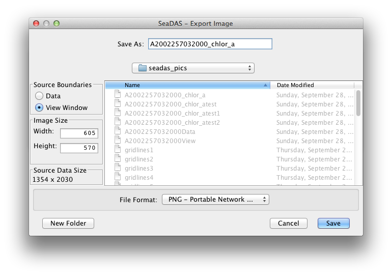

This page gives advice and suggestions on creating publication quality images with SeaDAS 7.1
Exporting Images - First, and foremost, to produce publication quality images, DON'T TAKE A SCREENSHOT. The
image displayed on the monitor has been interpolated from the pixel resolution of the original data to be
remapped onto
the pixel resolution of the image window space of the monitor. This resulting monitor pixel resolution will most likely
be lower than that of the original data. Furthering the screenshot issue,
is that any text added to the image in the layers, will be anti-aliased from the original text vector data to best fit
the monitor pixel resolution.
So the text will be too pixelated to present in a paper.
However, if
what you want is in fact a lower resolution image, intended to be displayed on the web, or a monitor, at the precise
pixel
resolution as it is displayed on your monitor, then for this case, a screenshot works perfectly and exactly fine.
But for publication quality images, what should you do? .... use the "Export Image" tool. This enables you to control
the resolution of the exported file. This tool is located at File -> Export Utilities -> Image or it can be found in
the drop down menu when the image is right clicked with the mouse. The following window opens ...

The top left panel "Source Boundaries" allows the user to choose whether the exported image file will contain all the
data pixels for the band with the band's defined boundaries, or to use the boundaries defined by the image view window
which the user has opened and possibly altered (zoomed in, zoomed out, shifted to a portion of the image, ... etc.). The
default selection is the "View Window" boundaries. If you have any images outside of the image, say for instance, map
gridline coordinate labels, then you will need to use the "View Window" boundaries. On the other hand, if you wish to
include only the data region, excluding anything outside the image, then select "Data" boundaries.
The next panel down on the left is the "Image Size". This dictates what the pixel dimensions of the exported image file
will be. The default values are the view window dimensions is "View Window" boundaries has been selected, or the data
dimensions
if "Data" has been selected. It's probably not likely that a user will want to alter the ratio of width to height, so
a fixed ratio has been set, such that a change to one field will result in the correct change in the other.
Finally, the bottom panel on the left, purely for informational convenience, displays the actual data dimensions. The
importance
here is to help keep the user aware, when using the "View Window" boundaries options, whether they may be choosing too
low of a resolution below that of the data.
Exporting an image with gridlines - When exporting an image as a pixel-based file (for instance a png file),
the gridline coordinate labels text will of course be bounded and affected by the resolution of the exported file. To
insure that the text looks good you will want to make sure the exported file is high resolution. So you will need to
choose a sufficiently large width and height in the "Image Size " panel to produce a good image. Font size will of
course
have a bearing on this setting, but it's easy enough to export a file, check it, and then, if text pixelation
is observed, adjust the image size accordingly and export again.
As mentioned, previously, for gridline coordinate labels which are outside the image, select "View Window" boundaries.
Of
course make sure you zoomed your image out in the image window so the labels are displayed. If you prefer to use the
"Data" boundaries
option, and yet still show gridline coordinate labels, then use the "Layer Editor" tool to put the gridline labels on
the inside of the image.
Upsampling and Downsampling of the Image - Unless you select "Data" boundaries and use the actual data
dimensions, your image will
be either upsampled or downsampled with an internal interpolation algorithm. If your image resolution is low enough that
you expect
pixelation to be visible, and you don't wish the pixels to be "smoothed" away by upsampling, then selecting "Data"
boundaries with actual
data dimensions is what you will want.
Exporting the Color Bar - SeaDAS 7.1 can export the colorbar as its own image file, or it can add the colorbar
to
the image as a layer. Currently, the colorbar layer is stored as raster data and not vector data. The colorbar layer is
useful for convenient display purposes, but the text is adversely impacted and bound to the pixel resolution of the data
image. So
to produce publication quality images, DON'T USE THE COLOR BAR LAYER.
For publication quality images export the color bar separately using the Color Bar tool (File -> Export Utilities ->
Color Bar).
Then combine the image and color bar files however you wish outside of SeaDAS.